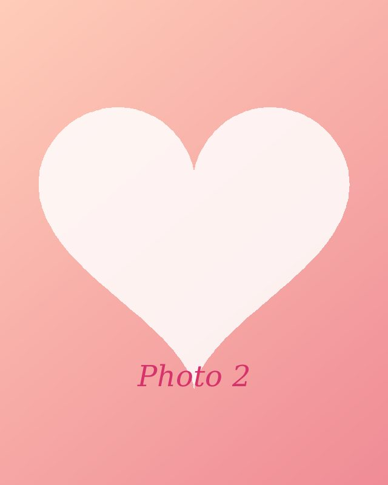

En ce jour merveilleux…

Je veux te rappeler combien tu es précieuse pour moi.
Même si la distance nous sépare, elle ne pourra jamais diminuer l’amour que je porte dans mon cœur pour toi.

Je veux te rappeler combien tu es précieuse pour moi.
Même si la distance nous sépare, elle ne pourra jamais diminuer l’amour que je porte dans mon cœur pour toi.